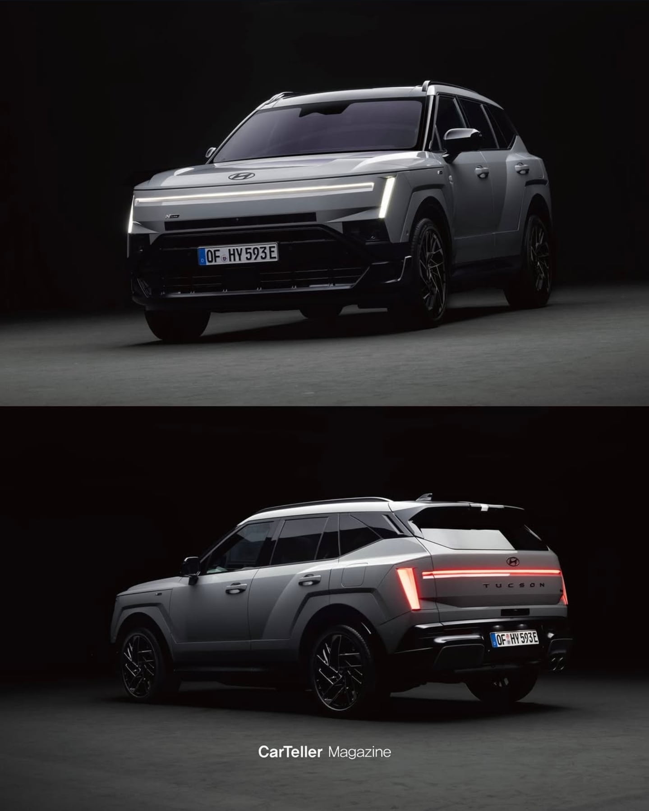
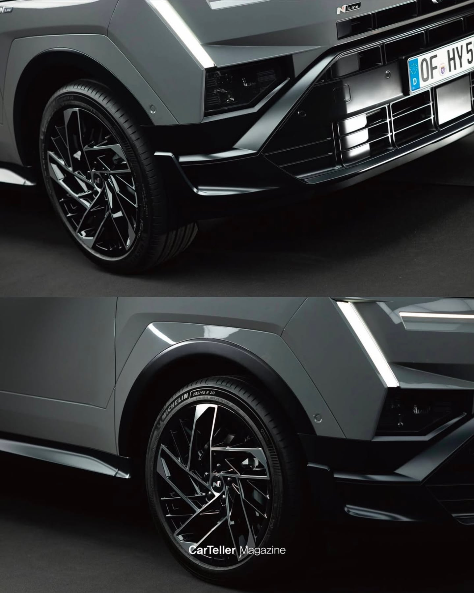
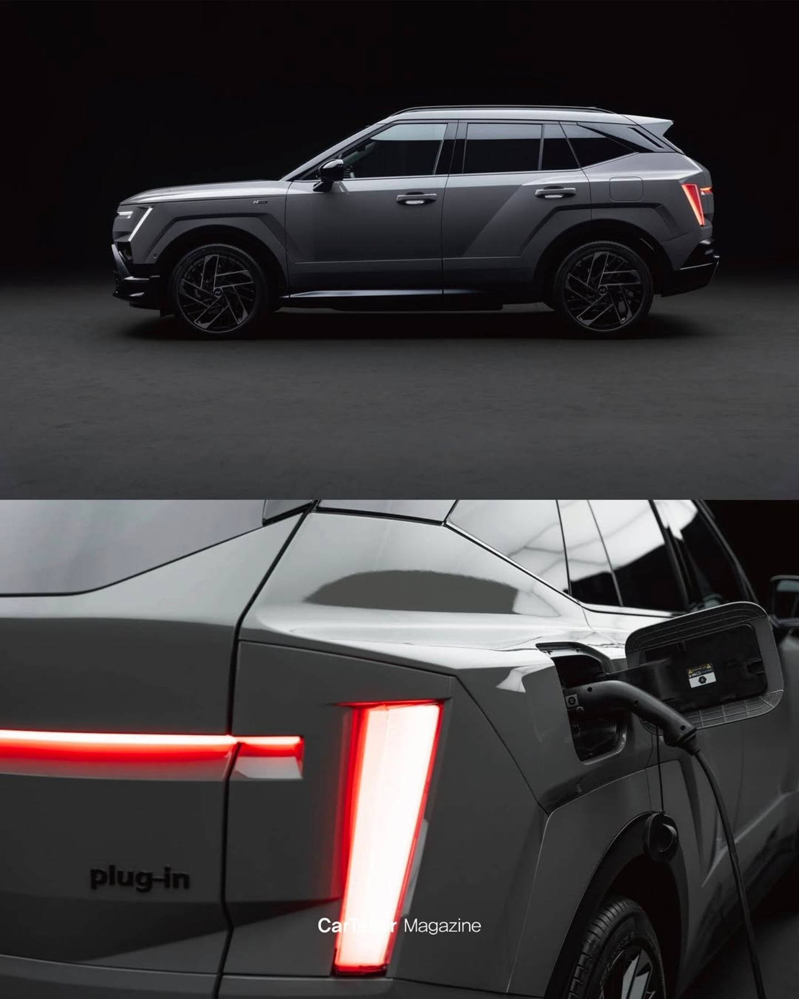
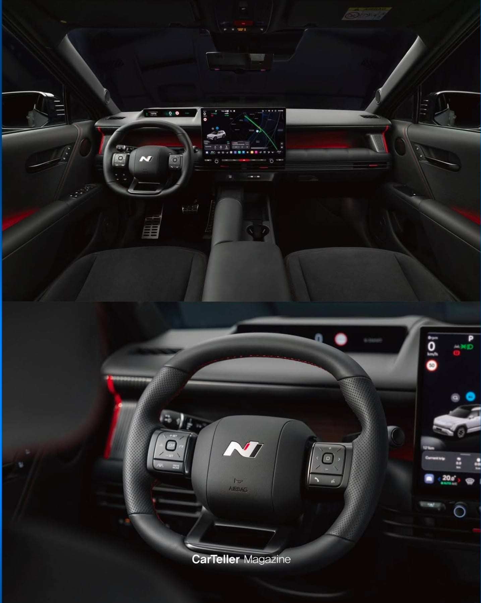
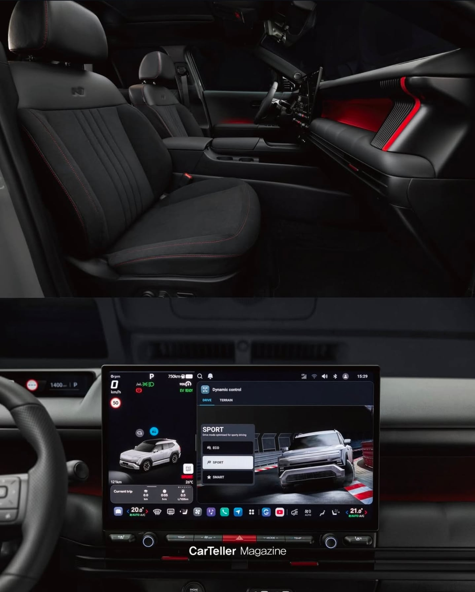
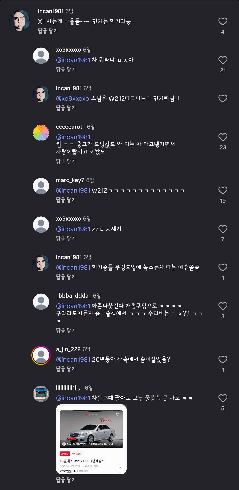

파워트레인
1.6T 마일드하이브리드
1.6T 하이브리드
1.6T 플러그인 하이브리드
플러그인 하이브리드 모덜은 292마력이라고
판매가격은 미공개
번외
투싼N라인 본 현까






파워트레인
1.6T 마일드하이브리드
1.6T 하이브리드
1.6T 플러그인 하이브리드
플러그인 하이브리드 모덜은 292마력이라고
판매가격은 미공개
번외
투싼N라인 본 현까

이번에 아방이 n 새로 또 나옴.
n인거 티 안내는 n
212는 너무하자나 시발 ㅋㅋㅋㅋㅋㅋㅋㅋㅋ
ㅈ구리네ㅋㅋㅋ
내가 현빠라서 그런건 아닌데 이번에 아반떼 개비싼데 실내 ㅈㄴ 예쁘긴해 앰비언트라이트랑 색감 ㅈ됨
엠비언트 의미 없다 난 끄고다닌다
앰비언트 달인거 벤츠시리즈때부터 고집했었는데 눈 졸라아프다 걍끄고다니게됨
개인적 취향이지만 순정 앰비언트 광량 낮다고 광량업하는거랑 라인추가해서 실내 밝게하는거 흐미
N말고
N라인이 이제 필요한가 싶긴한데
이제 그냥 디자인패키지 수준아님?
지금 제일 가성비좋은건
쏘나타가 제일가성비 좋은거같음ㅋㅋㅋ
아반떼랑 가격이 똑같아ㅋㅋㅋ
기본모델하고 파워트레인 이 다름
그렇긴한데 너무 나눠놓은 느낌이라서
기본 ㅡ N라인 ㅡ N인데 굳이필요한가 싶긴해
투싼은 N이없어서 그런거겠지?
BMW M 총괄 있던 사람 알버트 비어만 와서 만든 트림이라 그럼 BMW m패키지 M 나눠놓은거 처럼
원래 과거에도 n라인은 그냥 디자인 패키지였음
테세우스의 n이라고 겉모양은 5n처럼 풀튜닝한 5도있음
그거 머냐 아반떼 cn7 페리전 n라인이
원래 엔진출력하고 다 달랐다던데
그건 그전 삼각 아반떼에도 1.6t 팔았음 그거 라인업 계승된거라 n라인이랑은 상관없었음
지금 라인업이 1.6t를 소나타로 묶어버려서 하극상 방지용으로 단종시킴
생각해보면 터보모델을 n라인전용으로 팔았어야 그나마 아다리가맞았음
물리버튼 거의 패널행 당했네
플러그인 못해도 4천후반 예쌍한다
독3사도 번호판 앞자리 2개면 모닝 레이보다 싼것도 많음
시작가 3300- 풀옵 5200
구 G70 G80 모델링으로 N 신모델 뽑으면 존나게 잘 팔릴텐데 ㅉㅉ ㅋㅋ
ㅇㅈ 나도 올뉴g80 타긴하는데 그전 모델 각진게 더 스포티해서 갖고싶었다
풀옵 5000 정도 하겠네
난 진짜 저 계기판은 정말 별로인거같아 노멀모델이라면 몰라
N라인이나 N은 운전석쪽에 기존의 큼지막한 디스플레이 박아주면 좋을거같은데
나름 n라인인데 파워트레인은 연비에 초점이 맞춰져있는 것도 살짝 웃기긴해 ㅋㅋ
N라인 말고 N은 새로 뭐 안나오나